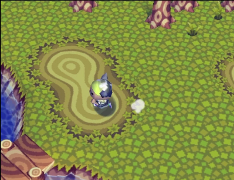
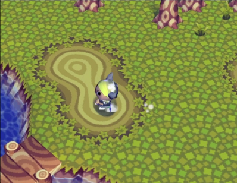
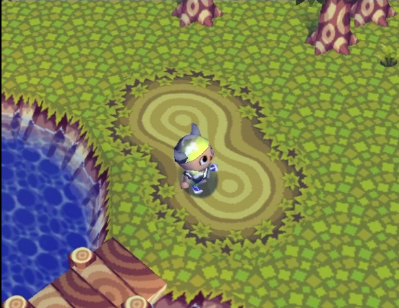
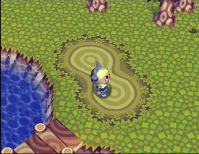

Nintendo's player character animations are pretty stunning, so let's take a deep dive into one.
We're going to take a look at this little quick-turn animation from the original Animal Crossing, released in 2001 for the GameCube.
This shows exactly the kind of detail I get really excited about in games - the small, strictly unnecessary touches that give your player a bit of extra personality and flesh out the feel of the game.
Animal Crossing is whimsical even as it's task-based. The game knows you're going to be running a lot of errands for the animals in your town, so they've added some things to do in the spaces where you'll be running - bugs to catch, trees to shake, treasure to dig up, and so on.
That also extends to the way the player moves. They can twirl their umbrella, walk, and run, and when they hold down the "run" button and quickly change direction, they'll do this neat little slide.
Since it's a core movement mechanic, it's one the player has access to all the time, and one that needs to be as fun as the bright colors and friendly characters of the town - it all needs to fit the feel of Animal Crossing.
Let's get started!
The movement we're looking at is just under a second long - let's call it 1 second to make things simpler. We'll be moving from a running state to the animation, then immediately back into a running state again.
Those start and end states look like this:
last frame of running
first frame of sliding
...sliding here...
last frame of sliding
first frame of running
We're going to draw some stick figure lines over the character like this in each frame: